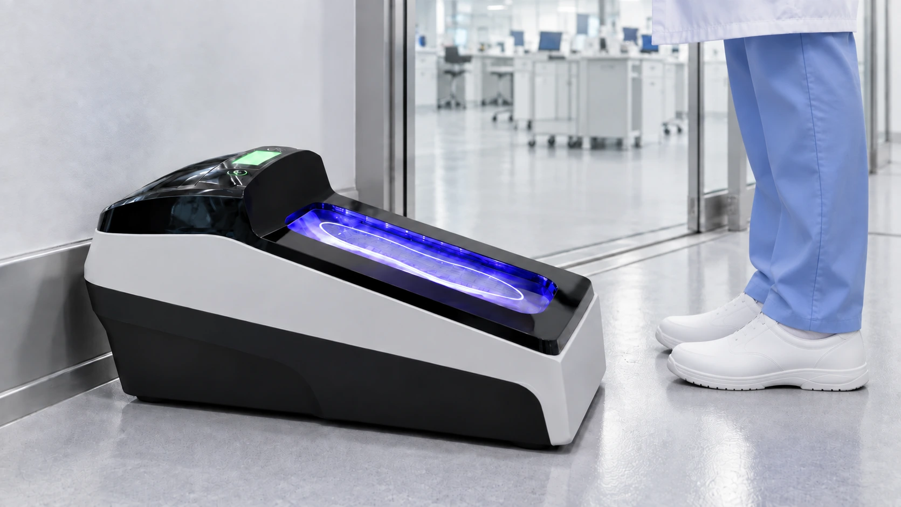
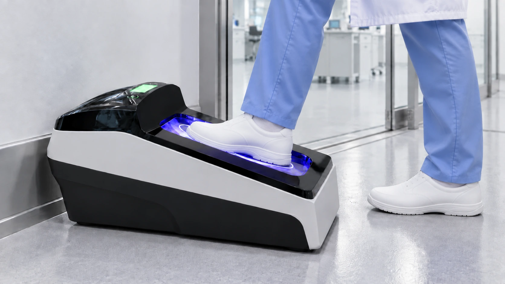
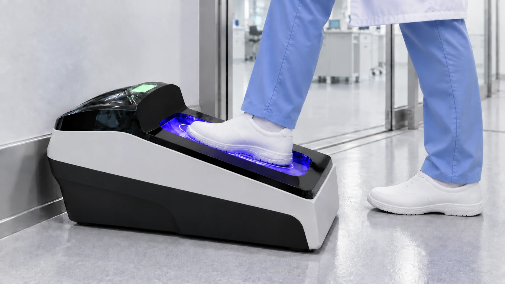
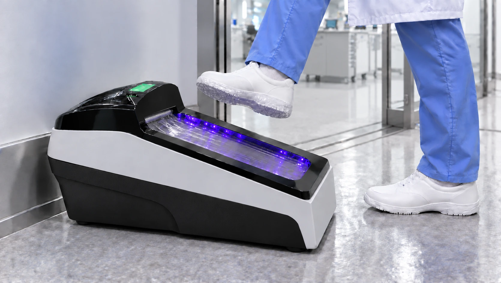
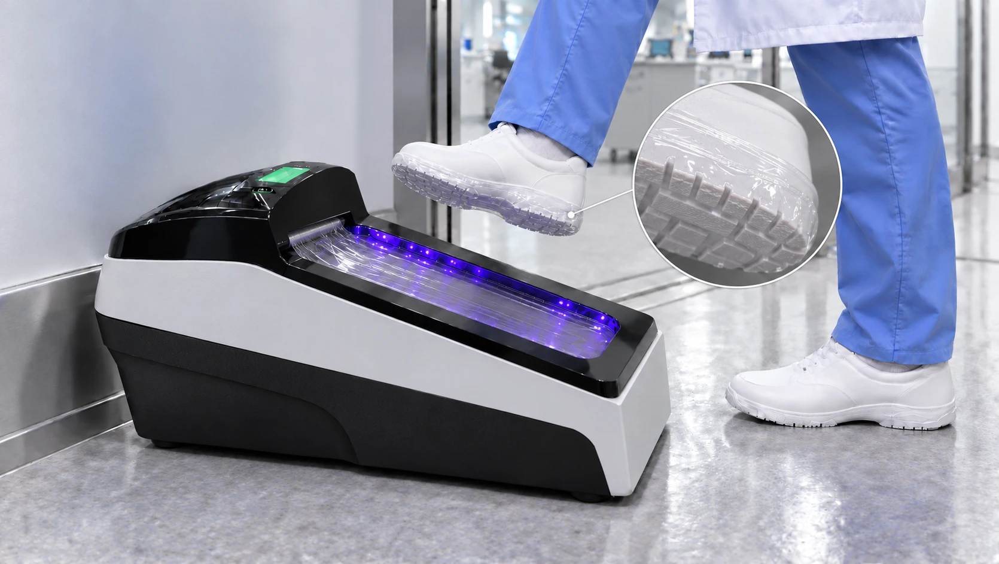

Jedan jednostavan korak
Spustite stopalo na platformu. Uređaj automatski pokreće postupak.
PROFESIONALNA ZAŠTITA OBUĆE
Jedan korak. Tri sekunde. Potpuna zaštita.
Automatsko postavljanje termoskupljajuće folije na đon obuće. Jednostavan postupak za ulazak u vaš radni prostor.
Pređite mišem ili dodirnite uređaj da vidite unutrašnjost.
01 / KAKO RADI
Šest koraka, jedan jednostavan postupak. Izaberite korak ili pustite da vas prikaz vodi kroz proces.





02 / PREDNOSTI
Zaštita obuće koja se uklapa u svakodnevni tok rada — od prve primene do zamene potrošnog materijala.
Spustite stopalo na platformu. Uređaj automatski pokreće postupak.
Folija se postavlja bez ručnog navlačenja zaštite preko obuće.
Tanka folija prati donji deo obuće i ostavlja gornji deo slobodnim.
Postupak se ponavlja za drugo stopalo, uz jednostavan tok prolaska.
Zamena rolne omogućava nastavak rada. Postupak je opisan u uputstvu.
03 / PRIMENA
Izaberite način primene u skladu sa pravilima i potrebama vaše ustanove ili proizvodnje.
Na ulazima u proizvodne i pakirne prostore.
Za definisane zone u kojima je potrebna zaštita obuće.
Na prelazu između radnih i zajedničkih prostora.
Za prostore sa posebnim pravilima ulaska.
Kao deo ustanovljenog postupka ulaska u radnu zonu.
Primena u skladu sa protokolom i zahtevima prostora.
04 / KARAKTERISTIKE
Za izbor uređaja i planiranje primene zatražite kompletnu tehničku dokumentaciju.
Zatražite tehničke podatke ↗| Način rada | Automatski, aktivacija pritiskom stopala |
|---|---|
| Zaštita | Termoskupljajuća folija oko đona |
| Potrošni materijal | Folija u rolni |
| Vreme primene* | Približno 3 sekunde po stopalu |
| Napajanje | 220–240 V / 50 Hz Za potvrdu prema deklaraciji |
| Kapacitet rolne | 1.000 aplikacija Za potvrdu prema specifikaciji folije |
| Dimenzije i materijali | Zatražite potvrđenu specifikaciju |
*Navedeno vreme potrebno je potvrditi za konkretan model i uslove primene.
05 / ČESTA PITANJA
Za dodatna pitanja tu smo da pomognemo.
Spustite jedno stopalo na platformu i sačekajte završetak postupka. Podignite nogu i ponovite za drugo stopalo.
Folija se skuplja oko đona i donjeg ruba obuće. Gornji deo obuće ostaje slobodan.
Kompatibilnost zavisi od dimenzija i oblika đona. Odgovarajuće modele obuće proverite na prezentaciji i u uputstvu proizvođača.
Rolna se menja pristupom predviđenom odeljku, prema uputstvu proizvođača. Pre zamene uređaj treba isključiti u skladu sa uputstvom.
Platforma i kućište održavaju se prema uputstvu proizvođača. Za sredstva za čišćenje i servisne intervale zatražite tehničku dokumentaciju.
06 / KONTAKT
Razgovarajmo o vašim potrebama, potrošnom materijalu i prezentaciji uređaja.
Zatražite ponudu putem e-pošte ↗